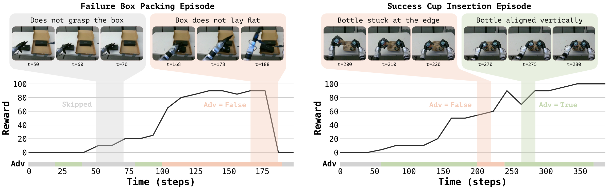
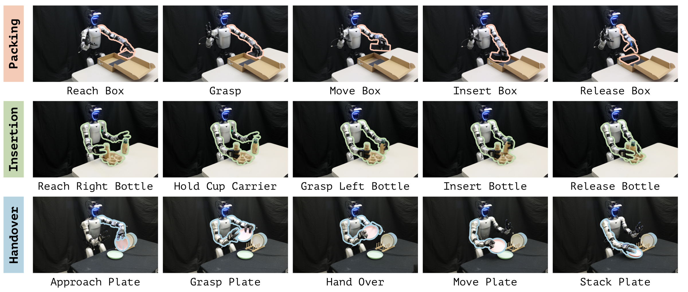
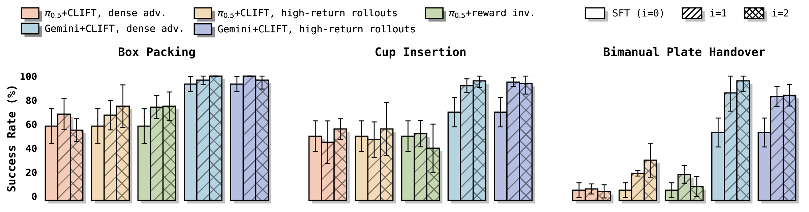

CLIFT achieves task mastery
On GROD, two flywheel cycles lift the demonstration-trained policy to near-perfect success across all three tasks — all through API-only access, with no additional human demonstrations.
Problem & Motivation
Deployment reality
Closed-weight robot foundation models are powerful generalists, but they often suffer from covariate shift, and lack the task mastery needed for deployment: on agile, contact-rich humanoid tasks, real rollouts still fail.
The wall
Mastery takes practice: the robot must learn in closed loop, where deployment experience improves the policy. But for a proprietary model like Gemini Robotics On-Device, the internals that closed-loop training typically requires — gradients, losses, action likelihoods — are hidden. The only access point is a managed SFT API.
Method
We access the foundation VLA only through a managed SFT interface — a black-box operator that maps a dataset of observation–instruction–action-chunk tuples to a fine-tuned policy, exposing no weights, gradients, losses, or action likelihoods. Standard RL is incompatible with this interface: PPO needs log-probabilities and backpropagation, and advantage-weighted regression reweights losses — neither is exposed. Our key insight is that the reinforcement signal can be encoded directly into the supervised training data, letting the SFT API perform RL-style policy improvement without modifying the model or training procedure. The loop starts from an initial policy obtained by fine-tuning the base model on teleoperated demonstrations — the only available update operation.

01Score
A select-then-distill scheme: human pairwise preferences select calibrated rewards from VLM-generated candidates, distilled into a reusable dense reward model. It scores task progress, execution quality, and safety at every step — so credit is assigned chunk by chunk, not per episode.
02Relabel
Each action chunk is compared, via visual retrieval, against chunks from similar starting states, and earns a positive or negative advantage token. The chunk then becomes a standard SFT example: the observation and action exactly as they happened, the advantage written into the instruction itself — in plain text. To the API, this is just supervised data.
03Condition
During training the advantage token was a label. At deployment it is flipped one way — True. Conditioned on the positive token, the policy steers toward what humans prefer, and away from what the reward model rejected.
04Iterate
Relabeled rollouts are appended to a cumulative dataset and the base model is re-fine-tuned from scratch each cycle, avoiding distributional drift. Every cycle produces a stronger task specialist — reaching task mastery after just two.

Experiments
We evaluate on a real Unitree G1 humanoid across three agile, contact-rich tasks of increasing complexity. Although tabletop, they are not fixed-base problems: the humanoid balances with its whole body throughout, so lower-body motions continually shift the camera viewpoint, end-effector pose, and contact geometry seen by the policy. Demonstrations are collected through whole-body VR teleoperation, and the policy is deployed on the same robot–controller stack used for evaluation.


On GROD, two flywheel cycles lift the demonstration-trained policy to near-perfect success across all three tasks — all through API-only access, with no additional human demonstrations.
The identical pipeline — same reward model, rollout budget, and advantage relabeling — also improves the open-weight π0.5, demonstrating that the non-invasive mechanism transfers across foundation models and access regimes.
Foundation-model choice matters even under API-only adaptation. A stronger model adapted through a narrow SFT interface outperforms a weaker model granted full internal access via FiLM-style invasive conditioning.
Closed-loop practice elicits corrective and pre-manipulation behaviors absent from the demonstrations, such as reorienting an object before grasping or retrying a failed insertion.
Results

Task success rate (%) over 100 trials per task. CLIFT uses the dense advantage-conditioned variant. Highlighted rows are CLIFT-adapted policies.
| Foundation model | Access regime | Stage | Box packing | Cup insertion | Plate handover |
|---|---|---|---|---|---|
| Gemini Robotics On-Device | Closed-weight (API-only) | SFT baseline | 93 | 70 | 53 |
| Gemini Robotics On-Device | Closed-weight (API-only) | + CLIFT (2 cycles) | 100 | 98 | 96 |
| π0.5 | Open-weight | SFT baseline | 59 | 50 | 5 |
| π0.5 | Open-weight | + CLIFT (2 cycles) | 76 | 56 | 30 |

Takeaway
We provide one of the first empirical studies of managed-API adaptation on a real humanoid. Direct SFT through the API already substantially outperforms a leading open-weight VLA trained on the same demonstrations, yet still falls short of deployment-level mastery. CLIFT closes this gap by turning deployment-time reward feedback into API-compatible supervised data, pushing Gemini Robotics On-Device to near-perfect success after two flywheel cycles. Managed SFT APIs can serve not only as customization interfaces, but as practical interfaces for closed-loop policy improvement — a path toward task mastery without “opening the model box.”
Citation
@misc{chen2026clift,
title = {{CLIFT}: Turning {Gemini Robotics On-Device} into Humanoid Specialists
via Non-Invasive Closed-Loop Iterative Fine-Tuning},
author = {Chen, Yuxin and Srikanth, Hari and Jew, Nathan and Wu, Menglin and
Wang, Pengcheng and Ren, Junli and Tomizuka, Masayoshi and Xu, Peng and
Xie, Jinyu and Tian, Ran},
year = {2026},
eprint = {2607.29172},
archivePrefix = {arXiv},
url = {https://arxiv.org/abs/2607.29172}
}